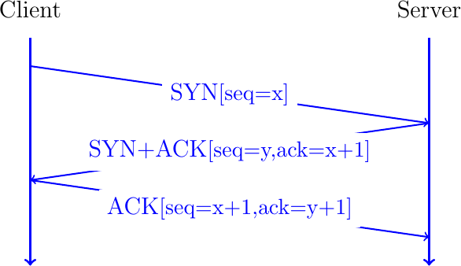
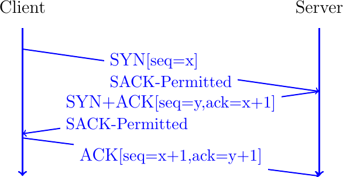
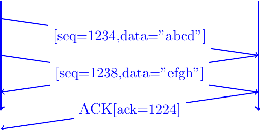
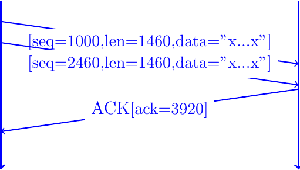
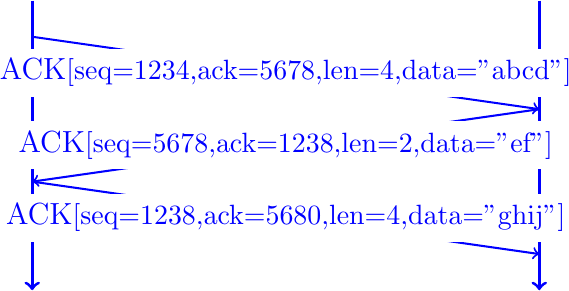
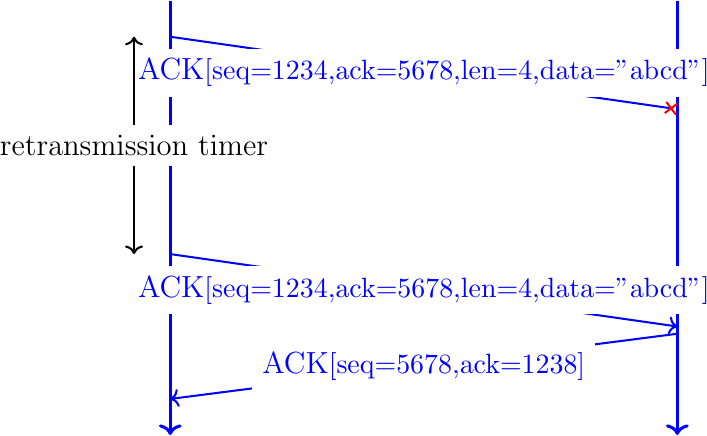
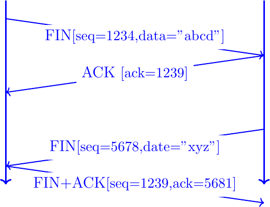

The Transmission Control Protocol (TCP)
TCP is a connection-oriented transport protocol. This means that a TCP connection must be established before communicating hosts can exchange data. A connection is a logical relation between the two communication hosts. Each hosts maintains some state about the connection and uses it to manage the connection.
TCP uses the three-way handshake as shown in Fig. 1. To initiate a connection, the client sends a TCP segment with the SYN flag set. Such a segment is usually called a SYN segment. It contains a random sequence number (x in Fig. 1). If the server accepts the connection, it replies with a SYN+ACK segment whose SYN and ACK flags are set. The acknowledgment number of this segment is set to x+1 to confirm the reception of the SYN segment sent by the client. The server selects a random sequence number (y in Fig. 1). Finally, the client replies with an ACK segment that acknowledges the reception of the SYN+ACK segment.

Fig. 1 Establishing a TCP connection using the three-way handshake
TCP was designed to be extensible. The TCP header contains a TCP Header Length (THL) field that indicates the total length of the TCP header in four-bytes words. For the normal header, this field is set to 5, which corresponds to the 20 bytes long TCP header. Larger values of the THL field indicate that the segment contains one or more TCP options. TCP options are encoded as a Type-Length-Value field. The first byte specifies the Type, the second byte indicates the length of the entire TCP option in bytes. The utilization of TCP options is usually negotiated during the three-way-exchange. The client adds a TCP option in the SYN segment. If the server does not recognize the option, it simply ignores it. If the server wants to utilize the extension for the connection, it simply adds the corresponding option in the SYN+ACK segment. This is illustrated in Fig. 2 with the Selective Acknowledgments extension [1] as an example.

Fig. 2 Negotiating the utilization of Selective Acknowledgments during the three-way handshake
A TCP connection is identified by using four fields that are included inside each TCP packet:
the client IP address
the server IP address
the client-selected port
the server port
- All TCP packets that belong to a connection contain these four fields in the IP and TCP header. When a host receives a packet, it uses them to match the connection to which it belongs. A TCP implementation maintains some state for each established TCP connection. This state is a data structure that contains fields which can vary from one implementation to another. The TCP specification defines some state variables that any implementation should remember. On the sender side, these include:
snd.una, the oldest unacknowledged sequence numbersnd.nxt, the next sequence number of be sentrcv.win, the latest window advertised by the remote host
A TCP sender also stores the data that has been sent but has not yet been acknowledged. It also measures the round-trip-time and its variability to set the retransmission timer and maintains several variables that are related to the congestion control scheme.
A TCP receiver also maintains state variables. These include rcv.next, the next expected sequence number. Data received in sequence can be delivered to the application while out-of-sequence data must be queued.
Finally, TCP implementations store the state of the connection according to the TCP state machine [2].
TCP implementations include lots of optimizations that are outside the scope of this brief introduction. Let us know briefly describe how TCP sends data reliably. Consider a TCP connection established between a client and a server. Fig. 3 shows a simple data transfer between these two hosts. The sequence number of the first segment starts at 1234, the current value of snd.nxt. For TCP, each transmitted byte consumes one sequence number. Thus, after having sent the first segment, the client's snd.nxt is set to 1238. The server receives the data in sequence and immediately acknowledges it. A TCP receiver always sets the acknowledgment number of the segments that it sends with the next expected sequence number, i.e. rcv.nxt.

Fig. 3 TCP Reliable data transfer
In practice, TCP implementations use the Nagle algorithm [3] and thus usually try to send full segments. They use the Maximum Segment Size (MSS) option during the handshake and PathMTU discovery the determine the largest segment which can be safely sent over a connection. Furthermore, TCP implementations usually delay acknowledgments and only acknowledge every second segment when these are received in sequence. This is illustrated in Fig. 4.

Fig. 4 TCP Reliable data transfer with delayed acknowledgments.
TCP uses a single segment type and each segment contains both a sequence number and an acknowledgment number. The sequence number is mainly useful when a segment contains data. A receiver only processes the acknowledgment number if the ACK flag is set. In practice, TCP uses cumulative acknowledgments and all the segments sent on a TCP connection have their ACK flag set. The only exception is the SYN segment sent by the client to initiate a connection.

Fig. 5 TCP piggybacking.
TCP uses different techniques to retransmit corrupted or lost data. The TCP header contains a 16 bits checksum that is computed over the entire TCP segment and a part of the IP header. The value of this checksum is computed by the sender and checked by the receiver to detect transmission errors. TCP copes with these errors by retransmitting data. The simplest technique is to rely on a retransmission timer. TCP continuously measure the round-trip-time, i.e. the delay between the transmission of a segment and the reception of the corresponding acknowledgment. It then sets a per-connection retransmission timer based on its estimations of the mean rtt and its variance [4]. This is illustrated in Fig. 6 where the arrow terminated with red cross corresponds to a lost segment. Upon expiration of the retransmission timer, the client retransmits the unacknowledged segment.

Fig. 6 TCP protects data by a retransmission timer
For performance reasons, TCP implementations try to avoid relying on the retransmission timer to retransmit the lost segments. Modern TCP implementations use selective acknowledgments which can be negotiated during the handshake. This is illustrated in Fig. 7. A selective acknowledgment reports blocks of sequence number that have been received correctly by the receiver. Upon reception of the SACK option, the sender knows that sequence numbers 1234-1237 have not been received while sequence numbers 1238-1250 have been correctly received.

Fig. 7 TCP leverages selective acknowledgments to retransmit lost data
When the client and the sender have exchanged all the required data, they can terminate the connection. TCP supports two different methods to terminate a connection. The reliable manner is that each host closes its direction of data transfer by sending a segment with the FIN flag set. The sequence number of this segment marks the end of the data transfer and the recipient of the segment acknowledges it once it has delivered all the data up to the sequence number of the FIN segment to its application. The release of a TCP connection is illustrated in Fig. 8. To reduce the size of the figure, we have set the FIN flag in segments that contains data. The server considers the connection to be closed upon reception of the FIN+ACK segment. It discards the state that it maintained for this now closed TCP connection. The client also considers the connection to be closed when it sends the FIN+ACK segment since all data has been acknowledged. However, it does not immediately discard the state for this connection because it needs to be able to retransmit the FIN+ACK segment in case it did not reach the server.

Fig. 8 Closing a TCP connection using the FIN flag

Fig. 9 Closing a TCP connection using a RST segment